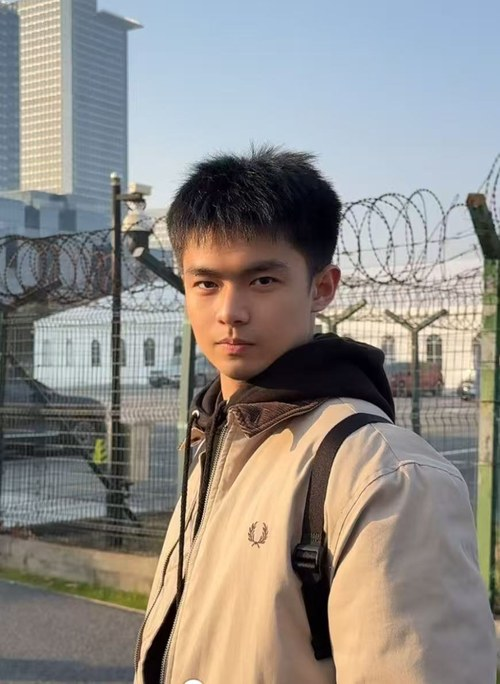
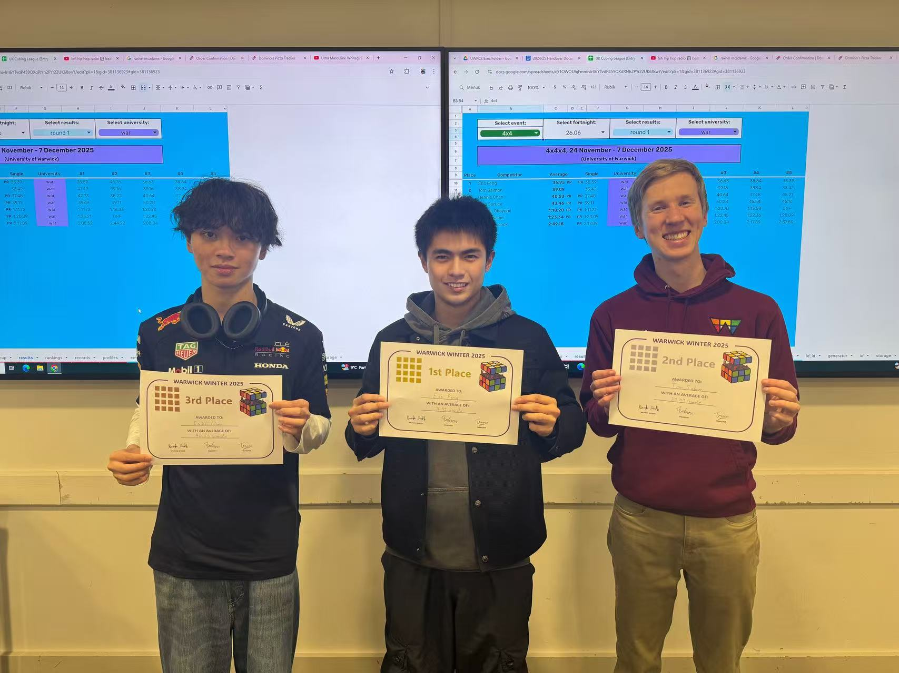
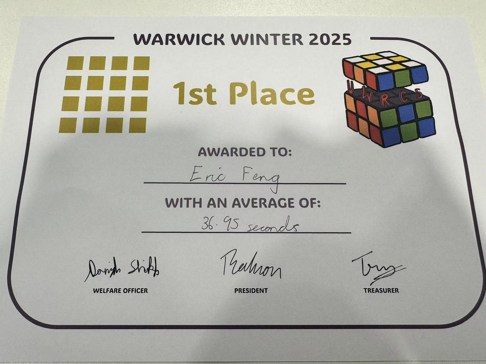

跨尺度 WSD 学习率调度迁移：μP 下的几何与预测
指导教师： 刘方辉
研究学习率调度在不同网络宽度和训练预算之间迁移的数学基础，重点关注优化动力学、尺度扩展规律以及 μP 的作用。

我是英国华威大学数学系本科生，研究方向为机器学习数学理论，主要关注神经网络训练动力学、无限宽极限、超参数迁移与尺度扩展规律。
目前，我是刘方辉教授研究组的成员，研究 μP 下学习率调度的跨尺度迁移；同时，也开始在 Ranko Lazić 教授的指导下，探索模型检查点平均与学习率衰减之间的数学关系。
我还在华威大学数学学院担任数学系助教，为 MORSE 专业一年级本科生开展小组数学指导课。
从数学出发，理解神经网络如何训练，以及学习率如何跨尺度迁移。
指导教师： 刘方辉
研究学习率调度在不同网络宽度和训练预算之间迁移的数学基础，重点关注优化动力学、尺度扩展规律以及 μP 的作用。
指导教师： Ranko Lazić
探索模型检查点平均与学习率衰减之间的数学联系，以及其对训练动力学与学习率选择的影响。
指导教师： 刘方辉
研究两步深度线性 μP 网络中最优学习率的全局几何，证明泛型唯一性，构造具有三个不同全局最优点的满秩例外情形，并建立扰动下的稳定性结果。
英国华威大学数学学院
为 MORSE 专业一年级本科生开展每周小组数学指导课，组织问题讨论、讲解基础概念与解题方法，并批改作业、提供反馈。
我也参加四阶魔方速拧比赛。我的 WCA 官方成绩包括单次 34.22 秒、平均 41.46 秒，并以平均 36.95 秒获得 Warwick Winter 2025 四阶魔方项目冠军。魔方主页 ↗


感谢 Damiano Testa 教授在我本科前两年担任个人导师，并始终给予我指导、鼓励与支持。